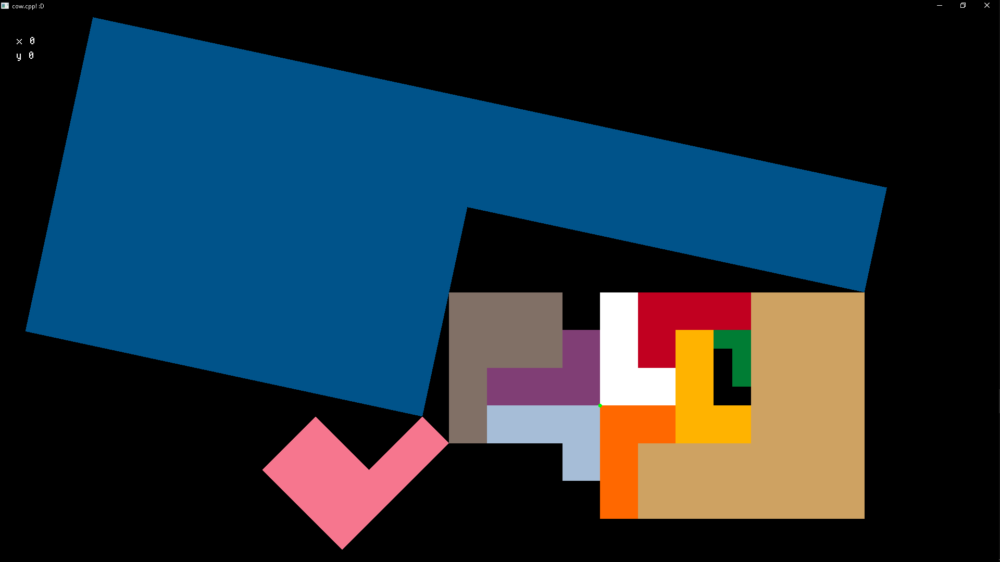

🟢 questions tend to be easier; I will give extensive hints (e.g. pseudocode, pointing out exactly where your bug is). 🟦 questions tend to be harder; I will give only minor hints (e.g. high-level approach, pointing out generally where your bug is). 🏴 questions tend to be hardest; I will only answer clarifying questions (e.g. what does this word mean?) NOTE: Green questions may still be quite challenging; different students may find different questions challenging. 🚨 I highly recommend completing all the Green questions first (_not_ including extra credit creative coding). 🚨 If you have time, I recommend then going back to the Blue and Black questions, and trying the easiest ones first. NOTE: This week, the Blue L-Block questions are probably easier than the Blue Mesh Data question. I recommend working on extra credit creative coding only after attempting all problems (or if you need a break). Collaboration is encouraged on all problems, provided you follow the spirit of the 50 ft rule and that all code you submit is your own. You are not expected to solve all the questions. Final semester grades may be curved up.
A triangle soup mesh (
BasicTriangleMesh3D) has data
$\begin{cases}
\text{vertex positions} = (\mathbf{p}_0, \mathbf{p}_1, \mathbf{p}_2, \mathbf{p}_3, \mathbf{p}_4, \mathbf{p}_5, ... ).
\end{cases}$
Its zeroth triangle is $\mathbf{T}_0 = (\mathbf{p}_0, \mathbf{p}_1, \mathbf{p}_2)$; its first triangle is $\mathbf{T}_1 = (\mathbf{p}_3, \mathbf{p}_4, \mathbf{p}_5),$ and so on.
An indexed triangle mesh (FancyTriangleMesh3D) has data
$\begin{cases}
\text{vertex positions} = (\mathbf{p}_0, \mathbf{p}_1, \mathbf{p}_2, \mathbf{p}_3, \mathbf{p}_4, \mathbf{p}_5, ... ).
\text{triangle indices} = (i_0, i_1, i_2, ...),\\
\end{cases}$
Its zeroth triangle is $\mathbf{T}_0 = (\mathbf{p}_{i_0}, \mathbf{p}_{i_1}, \mathbf{p}_{i_2})$; its first triangle $\mathbf{T}_1 = (\mathbf{p}_{i_3}, \mathbf{p}_{i_4}, \mathbf{p}_{i_5}),$ and so on.
a. (40 pts) Mesh Data Complete the following functions. - (8 pts) 🟢
load_basic_mesh(...)
A green box should show up.
HINT
struct BasicTriangleMesh3D {
int num_vertices;
vec3 *vertex_positions; // length is num_vertices
};
fancy2basic(...)
A 2nd, lighter colored, bunny should show up.
HINT
struct FancyTriangleMesh3D {
int num_vertices;
vec3 *vertex_positions; // length is num_vertices
vec3 *vertex_normals; // length is num_vertices
int num_triangles;
int3 *triangle_indices; // length is num_triangles
};
mesh_transform_vertex_positions_to_double_unit_box(...)
The bunnies and teapots should have the correct size and position (each mesh translated and uniformly scaled so its axis-aligned bounding box is now centered at the origin, with vertices on either side of the longest dimension of the bounding box touching the corresponding sides of the $[-1, 1]^3$ box.)
✨ HINT
Pseudocode for calculating the center and length of an axis-aligned bounding box for 1D data.left = HUGE
right = -HUGE
for x in vertex_positions_1D;
left = MIN(left, p);
right = MAX(right, p);
center = (left + right) / 2
length = right - left
fancy_mesh_alloc_compute_and_store_area_weighted_vertex_normals(...)
The 1st bunny should be properly lit.
The teapots should be lit but with seams.
NOTE: Small errors in your normal calculation code won't change the output much. Let's not stress on this.
✨ HINT
Pseudocode for calculating area-weighted vertex normals for an indexed triangle mesh:# start with a zero vector for every vertex
# e.g. use calloc(num_vertices, sizeof(vec3))
normals = [ V3(0, 0, 0) for _ in range(num_vertices) ]
for tri in triangle_indices:
area = calculate_triangle_area(...)
normal = calculate_triangle_unit_normal(...)
for vertex_index in tri
normals[vertex_index] += area * normal
for normal in normals:
normal = normalized(normal)
NOTE: For each vertex, this calculates the "area-weighted average of the normals of all triangles of which that vertex is a part."
NOTE: snail has functions
vec3 cross(vec3 a, vec3 b);
vec3 normalized(vec3 n);
fancy_mesh_merge_duplicated_vertices(...)
The 2nd teapot should have no seams.
NOTE: This function merges "duplicated" vertices, i.e., vertices with the same position.
HINT: p_i, p_j have the same position if IS_ZERO(squaredNorm(p_i - p_j).
b. (40 pts) L-Block
Consider the white tetris piece shown in the figure below.
It is two units wide and three units tall.
Its lower left corner is at the origin.
Your job is to transform it into the other pieces, using the functions Translation(double t_x, double t_y), Rotation(double theta), and Scaling(double s_x, double s_y).
- (4 pts) 🟢 M[0] yellow
- (4 pts) 🟢 M[1] purple
- (4 pts) 🟢 M[2] orange
- (4 pts) 🟢 M[3] lightblue
- (4 pts) 🟢 M[4] red
- (4 pts) 🟢 M[5] buff (tan)
- (4 pts) 🟢 M[6] gray
- (4 pts) 🟦 M[7] green
- (4 pts) 🟦 M[8] purplishpink
- (4 pts) 🏴 M[9] blue
HINT: Recall that reflection (flipping over an axis) can be seen as a special case of scaling.
✨ HINT: Recall that we write chained transforms from right to left.
E.g., a rotation of 90 degrees (counter-clockwise about the origin) followed by a translation of one unit to the right is
is Translation(1, 0) * Rotation(RAD(90)) in the code
and $\mathbf{T}^{\text{2D}}_{\begin{bmatrix}1\\0\end{bmatrix}}\mathbf{R}^{\text{2D}}_{\frac{\pi}{2}}$ in the notation from class.

NOTE: All touching pieces touch "perfectly."
NOTE: The green piece and the black silohuette it is touching are exactly the same size.
NOTE: The purplishpink piece is the exact same shape as the gray piece, rotated 135 degrees counter-clockwise.
c. (20 pts + extra credit) 🟢 #CreativeCoding -- Bouncy Castle
Using at least 10 total copies of the meshes included in hw3 (plus, optionally, whatever you can manage to load) make an animation evoactive of the topic "Bouncy Castle" that you find visually pleasing. Extra credit will be awarded sparingly for particularly technical, innovative, and creative submissions.
NOTE: You will get full credit (but no extra credit) for making something that an unbiased third party would recognize as a castle sitting cleanly on the ground.